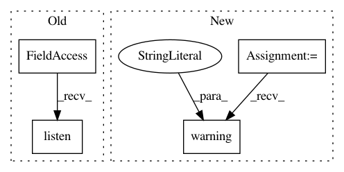

e0468f8b8e8667f05888a1ed218440d3ee2b9d31,homeassistant/__init__.py,HomeAssistant,track_point_in_utc_time,#HomeAssistant#Any#Any#,121
Before Change
action(now)
self.bus.listen(EVENT_TIME_CHANGED, point_in_time_listener)
return point_in_time_listener
// pylint: disable=too-many-arguments
def track_utc_time_change(self, action,
After Change
def track_point_in_utc_time(self, action, point_in_time):
Deprecated method to track point in UTC time.
_LOGGER.warning(
"hass.track_point_in_utc_time is deprecated. "
"Please use homeassistant.helpers.event.track_point_in_utc_time")
import homeassistant.helpers.event as helper
helper.track_point_in_utc_time(self, action, point_in_time)
def track_utc_time_change(self, action,
In pattern: SUPERPATTERN
Frequency: 3
Non-data size: 4
Instances
Project Name: home-assistant/home-assistant
Commit Name: e0468f8b8e8667f05888a1ed218440d3ee2b9d31
Time: 2015-07-26
Author: paulus@paulusschoutsen.nl
File Name: homeassistant/__init__.py
Class Name: HomeAssistant
Method Name: track_point_in_utc_time
Project Name: home-assistant/home-assistant
Commit Name: 5835d502c7dd3f1e86012bd3bf2edd80eda2f1c8
Time: 2014-11-30
Author: Paulus@PaulusSchoutsen.nl
File Name: homeassistant/__init__.py
Class Name: HomeAssistant
Method Name: track_state_change
Project Name: home-assistant/home-assistant
Commit Name: e0468f8b8e8667f05888a1ed218440d3ee2b9d31
Time: 2015-07-26
Author: paulus@paulusschoutsen.nl
File Name: homeassistant/__init__.py
Class Name: HomeAssistant
Method Name: track_time_change